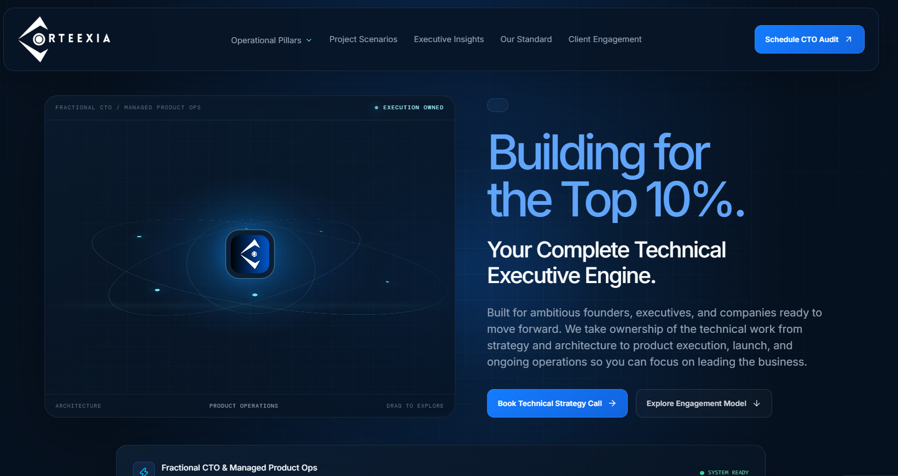
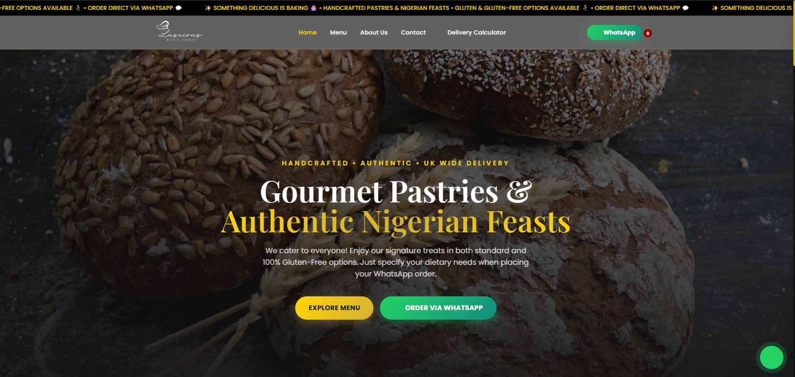
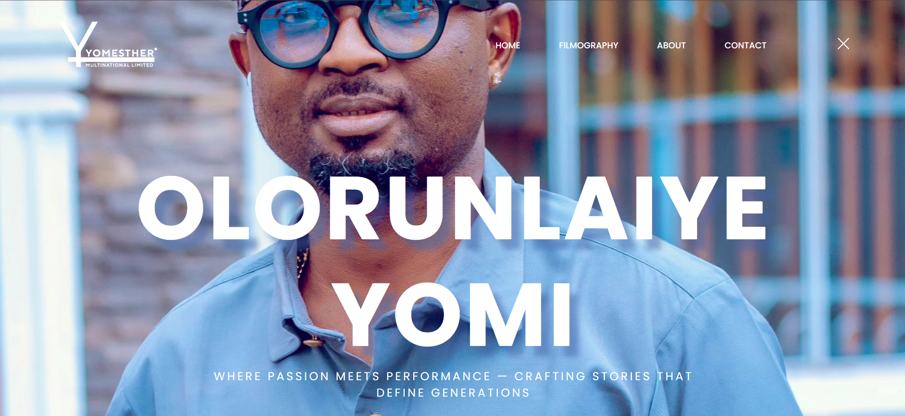

VISIT WEBSITE ↗
VISIT WEBSITE ↗Designing
prestige.
Engineering speed.
I turn ambitious ideas into digital experiences that feel exceptional, work relentlessly, and move business forward.
Available for remote contracts·US | UK | Europe | Africa
SYSTEMS / 01
BUILT TO MOVE
T.BUILD / SCALE
SIGNAL01 — 99.9%
LATENCY< 2.0 SEC
SCROLL TO EXPLORE01 — 04
01 / HOW I THINK
One partner.
Three perspectives.
The best digital work doesn't stop at looking good. It creates a connected system where every decision earns its place.
PERSPECTIVE / 01⌘
Clarity before
complexity.
Every strong experience begins with a clear point of view. I map the customer journey, define the design language, and create a system that makes the next right action feel effortless.
N 06° 31' 12.0" E 03° 22' 42.0"
PERSPECTIVE / 02⌘
Beautifully
built to last.
Elegant interfaces need dependable foundations. I engineer accessible front ends, resilient CMS architecture, and fast integrations that stay adaptable as your business grows.
DESIGN TOKEN → COMPONENT → EXPERIENCE
PERSPECTIVE / 03⌘
Built for the
real world.
Launch is the beginning, not the finish line. I connect the tools, simplify the handoffs, and measure what matters so teams can operate with confidence.
LESS FRICTION / MORE MOMENTUM
02 / SELECTED WORK
Digital work
with a pulse.
Selected websites and design projects from my portfolio. Open a live site or view a design sample.
FILTER /
VISIT WEBSITE ↗ VISIT WEBSITE ↗
VISIT WEBSITE ↗ VISIT WEBSITE ↗
VISIT WEBSITE ↗
VISIT WEBSITE ↗ VISIT WEBSITE ↗
VISIT WEBSITE ↗ VISIT WEBSITE ↗
VISIT WEBSITE ↗ VISIT WEBSITE ↗
VISIT WEBSITE ↗ VISIT WEBSITE ↗
VISIT WEBSITE ↗ VISIT WEBSITE ↗
VISIT WEBSITE ↗ VISIT WEBSITE ↗
VISIT WEBSITE ↗ VISIT WEBSITE ↗
VISIT WEBSITE ↗ VISIT WEBSITE ↗
VISIT WEBSITE ↗ VISIT WEBSITE ↗
VISIT WEBSITE ↗
VISIT WEBSITE ↗ VISIT WEBSITE ↗
VISIT WEBSITE ↗
VISIT WEBSITE ↗MORE THAN PIXELS. SYSTEMS THAT PERFORM.Have a challenge in mind? Let's talk ↗
03 / INDEPENDENT REFERENCES
Distinctive sites.
Fresh perspectives.
A more independent mix of thoughtfully art-directed public websites—selected for their visual character, clarity, and industry-specific ideas.
INDEPENDENT INSPIRATION REFERENCES — NOT CLIENT PROJECTS OR WORK I AM CLAIMING.
INDUSTRY /
REF / 01EDUCATION
Acumen Academy
Purpose-led learning experiences and editorial storytelling.
VISIT ORIGINAL SITE ↗ REF / 02EDUCATIONKaospilot
Bold creative-school identity and unconventional course narratives.
VISIT ORIGINAL SITE ↗ REF / 03EDUCATION42
Distinctive visual language for an alternative tech education model.
VISIT ORIGINAL SITE ↗ REF / 04TECHNOLOGYResend
Refined developer-tool presentation with a crisp product story.
VISIT ORIGINAL SITE ↗ REF / 05TECHNOLOGYCal.com
Open-source scheduling product with clear use-case routes.
VISIT ORIGINAL SITE ↗ REF / 06TECHNOLOGYFathom Analytics
Privacy-first analytics explained with calm, considered design.
VISIT ORIGINAL SITE ↗ REF / 07BUSINESS & DESIGNStudio Mast
Independent studio identity and portfolio-led business storytelling.
VISIT ORIGINAL SITE ↗ REF / 08BUSINESS & DESIGNfrog
Strategy and design services presented through strong visual cases.
VISIT ORIGINAL SITE ↗ REF / 09BUSINESS & DESIGNInstrument
Digital studio work with expressive motion and visual craft.
VISIT ORIGINAL SITE ↗ REF / 10HEALTHCAREMaven Clinic
Human-centered care pathways and supportive service design.
VISIT ORIGINAL SITE ↗ REF / 11HEALTHCAREHinge Health
Digital care explained with approachable product storytelling.
VISIT ORIGINAL SITE ↗ REF / 12HEALTHCAREEucalyptus
Contemporary digital health brands and considered patient journeys.
VISIT ORIGINAL SITE ↗ REF / 13AGRICULTUREEarthOptics
Translating soil intelligence and agricultural data into clear value.
VISIT ORIGINAL SITE ↗ REF / 14AGRICULTUREECF Farm Systems
Modern aquaponics and sustainable food production storytelling.
VISIT ORIGINAL SITE ↗ REF / 15AGRICULTUREIndigo Ag
Bringing farm innovation and climate-focused programs together.
VISIT ORIGINAL SITE ↗ REF / 16FINANCEMercury
Minimal fintech art direction and clean business banking journeys.
VISIT ORIGINAL SITE ↗ REF / 17FINANCEPiggyVest
Accessible savings product communication with a distinct voice.
VISIT ORIGINAL SITE ↗ REF / 18FINANCECleo
Playful financial wellness content and conversational brand design.
VISIT ORIGINAL SITE ↗ REF / 19COMMERCE & FOODGraza
Distinctive packaging translated into a lively commerce experience.
VISIT ORIGINAL SITE ↗ REF / 20COMMERCE & APPARELTracksmith
Editorial athletic storytelling and premium product presentation.
VISIT ORIGINAL SITE ↗ REF / 21COMMERCE & LIFESTYLEThe Sill
Warm product photography and approachable plant-care commerce.
VISIT ORIGINAL SITE ↗ REF / 22TRAVELOur Habitas
Atmospheric hospitality storytelling and destination discovery.
VISIT ORIGINAL SITE ↗ REF / 23TRAVELUnder Canvas
Immersive outdoor stays presented through evocative photography.
VISIT ORIGINAL SITE ↗ REF / 24TRAVELAutoCamp
Design-led outdoor stays and immersive destination storytelling.
VISIT ORIGINAL SITE ↗ REF / 25ENERGYEnpal
Residential solar and clean-energy services made approachable.
VISIT ORIGINAL SITE ↗ REF / 26ENERGYAurora Energy Research
Complex energy insight presented for a specialist audience.
VISIT ORIGINAL SITE ↗ REF / 27ENERGYHeatio
Home energy technology with human, everyday product framing.
VISIT ORIGINAL SITE ↗ REF / 28ARTS & CULTUREArtangel
Experimental public art communicated through rich editorial stories.
VISIT ORIGINAL SITE ↗ REF / 29ARTS & CULTURESerpentine
Contemporary art programming and striking cultural storytelling.
VISIT ORIGINAL SITE ↗ REF / 30ARTS & CULTUREPhaidon
Art and design publishing with strong image-led presentation.
VISIT ORIGINAL SITE ↗All links open the original organizations’ websites. These references are shared for independent design inspiration, not as portfolio work or endorsements. Site designs may change over time.
04 / SERVICES
What I engineer.
Three connected disciplines: high-performance web engineering, conversion-focused user experience, and cohesive digital identity.
High-Performance Web Engineering
Custom front ends and responsive web apps with robust CMS and commerce foundations.
- HTML5, CSS3 & JavaScript / ES6+
- Webflow, Shopify Plus & custom WordPress
- Mobile-first builds & Core Web Vitals
Conversion-Driven UI/UX Design
Premium interfaces and user journeys designed to make the next step feel clear.
- High-end UI design & interactive prototypes
- Figma design systems and UI kits
- Booking, checkout & customer journey optimization
Digital Identity & Brand Architecture
Distinctive brand systems that create consistency across digital touchpoints.
- Digital brand identity & logo systems
- Scalable visual systems and design assets
- Cohesive corporate branding
05 / YOUR NEXT MOVE
Make the
next thing
matter.
Have an ambitious brief, a stubborn problem, or a digital experience ready for its next chapter? Let's make it real.
LET'S FIND A TIME
WAT / UTC+1A good first conversation
starts with a hello.
OCTOBER 2026
MOTUWETHFRSASU
2829301234
567891011
12131415161718
19202122232425
2627282930311
SELECT A TIME / WAT
Request a discovery call ↗Select a date and time to prepare your request.
OR SEND A BRIEFREPLY WITHIN 1–2 DAYS